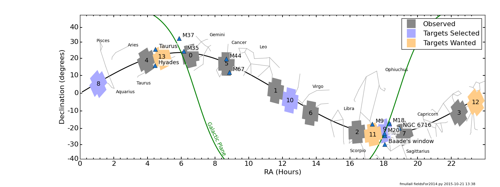
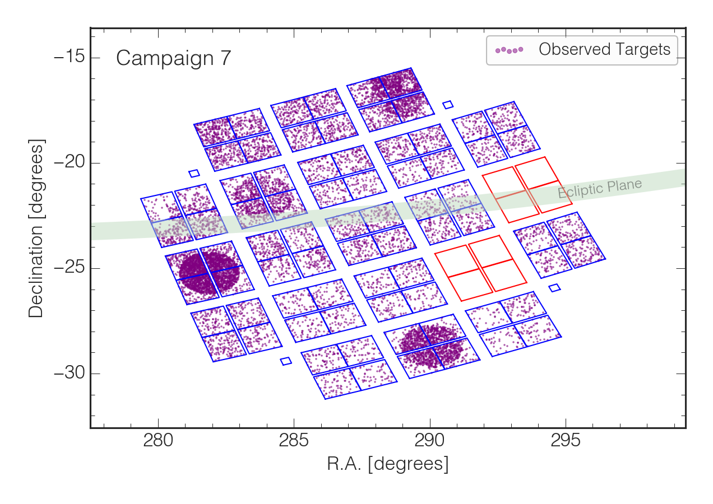
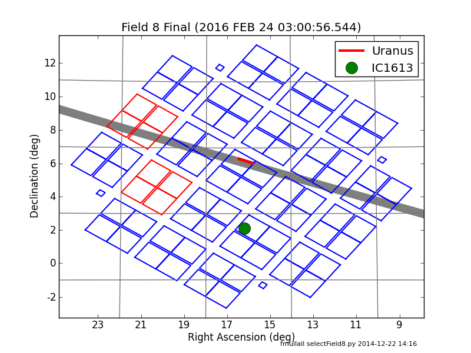
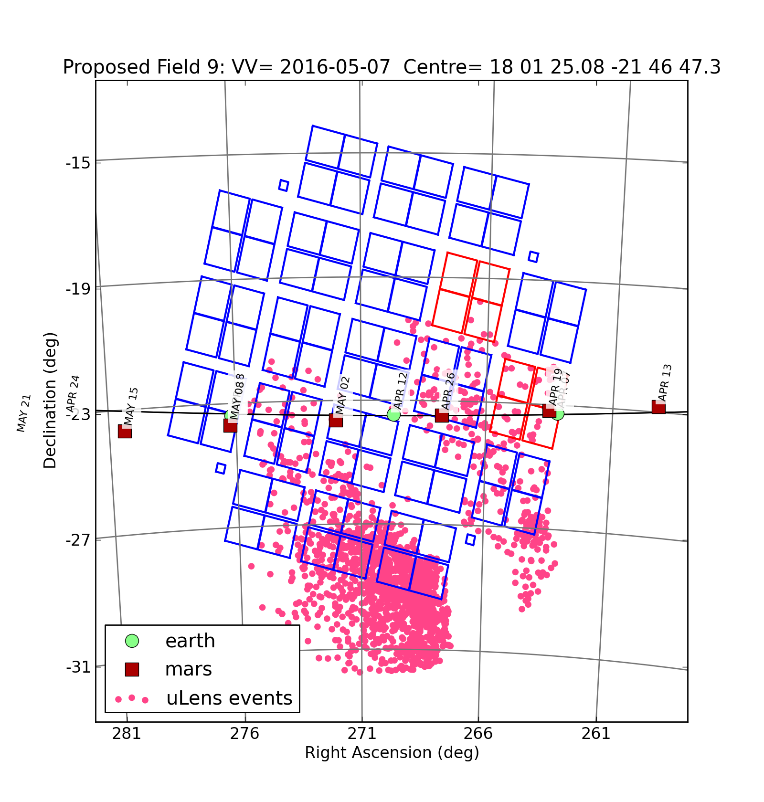
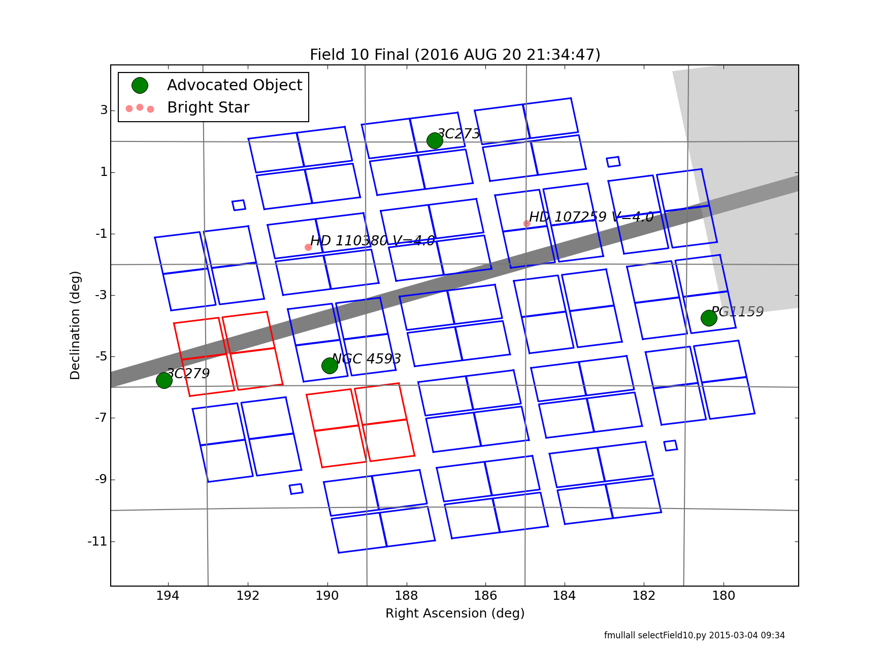
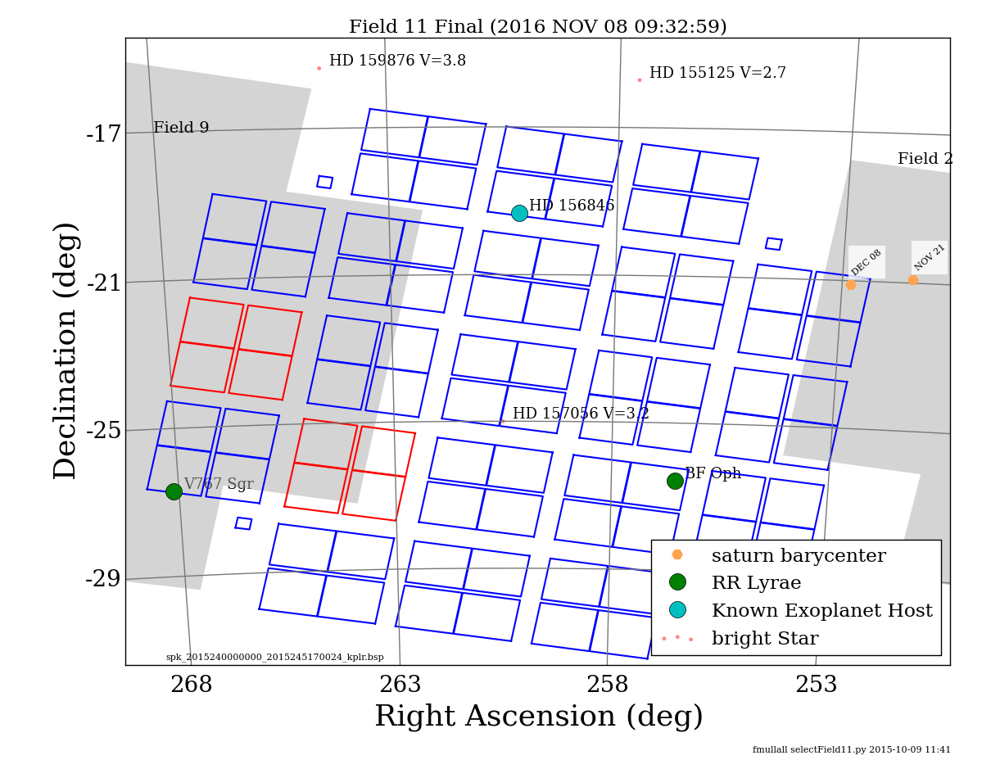
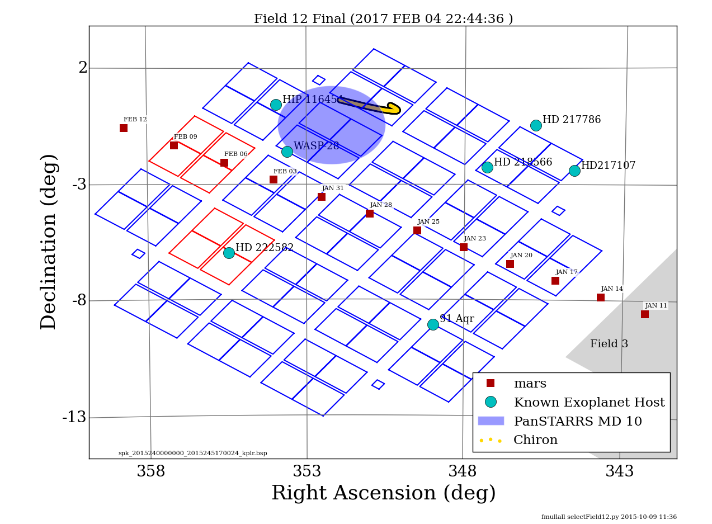
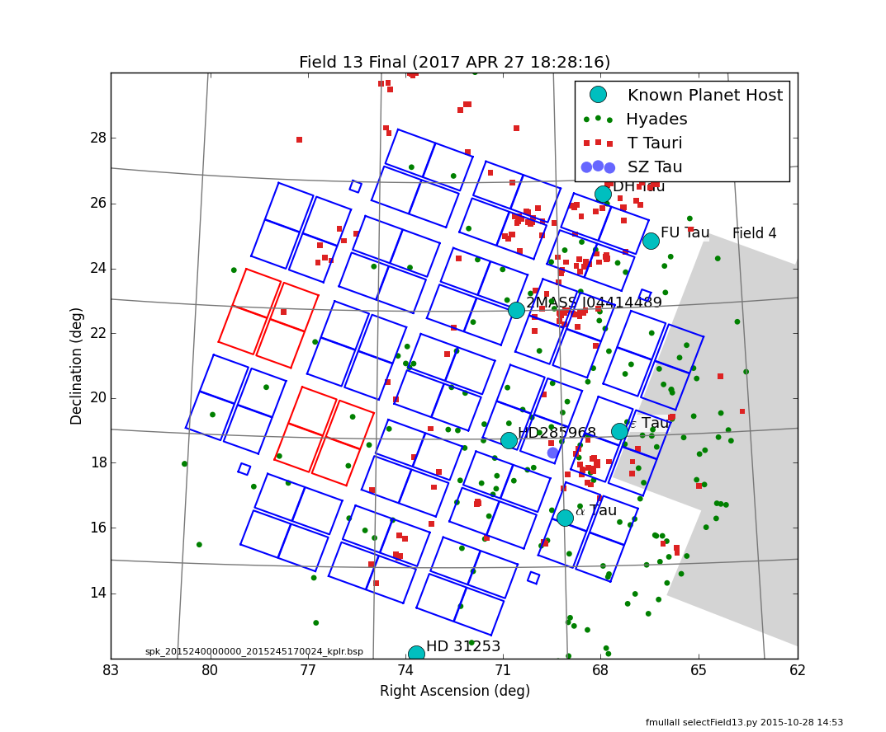

Each K2 Campaign has a duration of approximately 80 days and remains fixed upon a single boresight position. This page details the previous and upcoming Campaign fields observed by K2.

Field dates and positions
| Field | Start | Stop | Data available | RA (J2000) | Dec (J2000) | Target list |
Release notes |
Comments |
|---|---|---|---|---|---|---|---|---|
| 0 | 2014 Mar 08 | 2014 May 27 | 2014 Sep 08 | 06:33:11.14 | +21:35:16.40 | Near Galactic Anti-center, M35, NGC 2158 | ||
| 1 | 2014 May 30 | 2014 Aug 21 | 2014 Dec 23 | 11:35:45.51 | +01:25:02.28 | North Galactic Cap | ||
| 2 | 2014 Aug 23 | 2014 Nov 13 | 2015 Mar 16 | 16:24:30.34 | -22:26:50.28 | Near Gal Center, M4, M80, M19, Upr Sco, rho Oph | ||
| 3 | 2014 Nov 14 | 2015 Feb 03 | 2015 Jul 17 | 22:26:39.68 | -11:05:47.99 | South Galactic Cap, Neptune | ||
| 4 | 2015 Feb 07 | 2015 Apr 23 | 2015 Sep 04 | 03:56:18.22 | +18:39:38.09 | M45 (Pleiades), NGC1647, Hyades | ||
| 5 | 2015 Apr 27 | 2015 Jul 10 | 2015 Oct 29 | 08:40:37.84 | +16:49:46.61 | M44 (Beehive), M67 | ||
| 6 | 2015 Jul 14 | 2015 Sep 30 | 2016 Jan 01 | 13:39:27.61 | -11:17:43.29 | North Galactic Cap | ||
| 7 | 2015 Oct 03 | 2015 Dec 26 | 2016 Mar 28 | 19:11:18.84 | -23:21:36.07 | Near Galactic Center, NGC 6717 | ||
| 8 | 2016 Jan 03 | 2016 Mar 23 | 2016 Jun 19 | 01:05:21.12 | +05:15:44.45 | Uranus, IC1613 | ||
| 9 | 2016 Apr 07 | 2016 Jul 02 | 2016 Sep 26 | 18:01:25.08 | -21:46:47.32 | Galactic Center, Baades Window, M21, M18, M25, M8 | ||
| 10 | 2016 Jul 06 | 2016 Sep 20 | 2016 Dec 22 | 12:27:07.07 | -04:01:37.8 | North Galactic Cap | ||
| 11 | 2016 Sep 24 | 2016 Dec 08 | 2017 Mar 19 | 17:21:33.12 | -23:58:33.45 | Galactic Center, Saturn | ||
| 12 | 2016 Dec 15 | 2017 Mar 04 | 2017 Jun 05 | 23:26:42.61 | -05:05:44.33 | South Galactic Cap, Chiron, Mars | ||
| 13 | 2017 Mar 08 | 2017 May 27 | 2017 Sep 03 | 04:51:11.24 | +20:47:10.69 | Hyades, Taurus |
Fields of view
Campaign 0

Campaign 1

Campaign 2

Campaign 3

Campaign 4

Campaign 5

Campaign 6

Campaign 7

Campaign 8

Campaign 9

Campaign 10

Campaign 11

Campaign 12

Campaign 13
